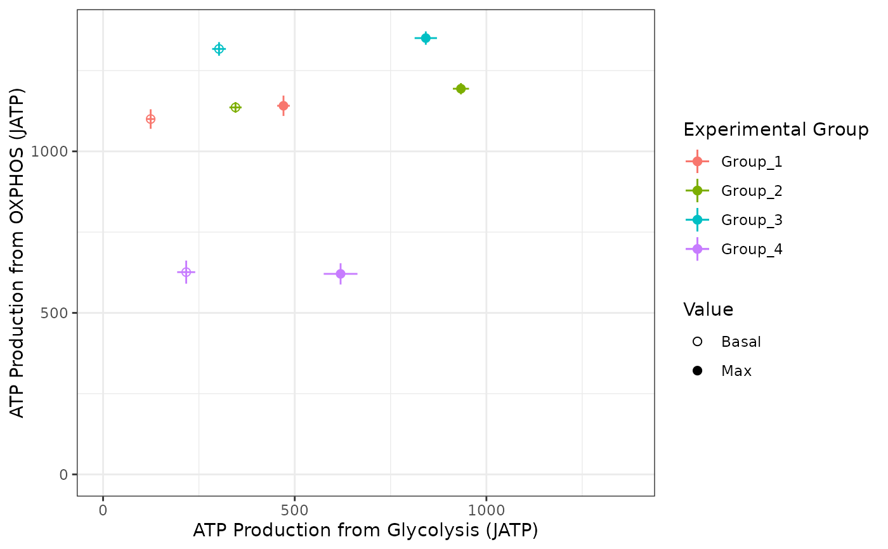

make_bioscope_plot.RdWrapper to create a 2D plot visualizing the mean and standard deviation basal and maximal ATP production from glycolysis and OXPHOS for each experimental group Create a Bioenergetic scope plot from input Seahorse Wave export, long-form rates excel files
make_bioscope_plot(rep_list, ph, pka, buffer)A list of Seahorse Wave excel export files. One file per replicate. Group all replicates for a given experiment in a single folder, and write that folder's path in "seahorse_data". You can use `list.files("seahorse_data") "full.names=TRUE") to get the paths to the files.
pH value for energetics calculation (for XF Media, 7.5)
pKa value for energetics calculation (for XF Media, 6.063)
buffer for energetics calculation (for XF Media, 0.1 mpH/pmol H+)
a ggplot
rep_list <- system.file("extdata", package = "ceas") |> list.files(pattern = "*.xlsx", full.names = TRUE)
make_bioscope_plot(rep_list, ph = 7.4, pka = 6.093, buffer = 0.1)
